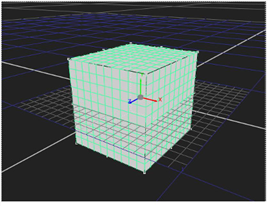

一个 立方体 是熟悉的六面多面体。你可以变换它的任何边 (当然，用剪辑对它进行纹理处理)。
|
 |
| 立方体对象。 |
| 1。 | 单击 3D > 几何 > 立方体 到 插入多维数据集节点。 |
| 2. | 拖动多维数据集节点的 Img 管道到包含要用作纹理的剪辑的读取节点。 |
| 3. | 将场景节点的一个编号管道拖动到多维数据集节点，以在场景中放置多维数据集。 |
| 4. | 使用立方体对象的变换控制来操纵立方体在 3D 空间中的位置、比例和旋转。有关更多信息，请参见 从节点属性面板转换 . |
| 5. | 翻译立方体的任何一面来改变它的形状。 |
| 1。 | 如果需要，双击 C Ube 节点显示其参数 (从而在 场景)。 |
| 2. | 增加或减少 立方体 字段。(假设对象的正 z 视图, x 指左侧; y ,底部; n ,背面; r ,右侧; t ,顶部; 和 f ,正面。) |
或拖动任何侧边顺序，将其相对于当前视角进行平移。
|
|